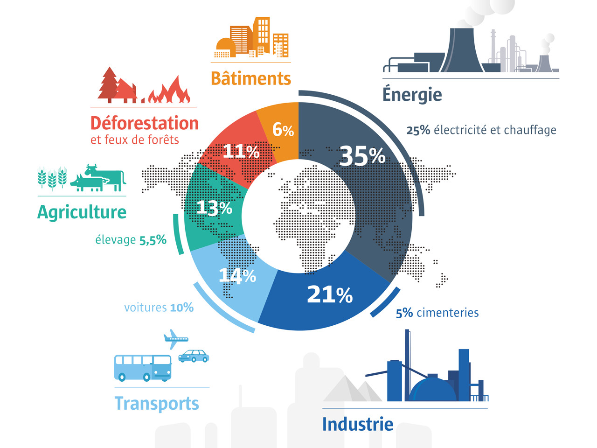

L’effet de serre est un phénomène naturel et essentiel à la vie sur Terre : sans ce phénomène,
la température moyenne à la surface de la Terre ne dépasserait pas les -18°C.
Le terme “effet de serre” vient du fonctionnement d’une serre en verre : les parois vitrées
laissent passer l’énergie lumineuse, tout en retenant la chaleur à l’intérieur de la serre :
ainsi, la température augmente.
Transposé à l’échelle de la planète, c’est l’atmosphère qui joue le rôle de la vitre,
en retenant la chaleur grâce aux gaz qu’elle contient : CO2, CH4 mais surtout H2O : ce
sont les gaz à effet de serre.
Nous avons vu dans la partie précédente que le réchauffement global de la planète était dû à la
libération dans l’atmosphère de gaz à effet de serre, la principale source de ces gaz étant la
consommation d’énergie fossiles.
Ces énergies, en plus d'exister en quantité limitée sur terre (lien énergies renouvelables),
rejettent lors de leur combustion du dioxyde de carbone (CO2); du méthane (CH4); de l’ozone (O3)
et d’autres gaz à effet de serre.
Il est important de savoir que ces gaz n’ont pas tous le même impact : pour mesurer l’influence
d’un gaz sur l’effet de serre, on parle d’équivalent carbone. Ainsi, 1T de CO2 correspond à
273kg en équivalent carbone, tandis que 1T de méthane correspond à 6.3T équivalent carbone.
On peut également raisonner en PRG (Pouvoir Réchauffant Global). Le CO2 a un PRG de 1,
le méthane de 25, et le CFC-12 a un PRG de 10 900. Ces chiffres nous permettent de réaliser
que notre impact dépend grandement de la nature des gaz rejetés par nos activités.
L’impact de l’Homme sur le changement climatique
Le graphique ci-dessous présente la part de chaque industrie dans les émissions de gaz à effet de
serre. On constate que le chauffage et l’électricité, dans les bâtiments publics ou résidentiels,
est le principal secteur d’émission, un secteur sur lequel il est pourtant facile d’agir à l’échelle
individuelle. L’industrie représente elle aussi une part importante.
L’agriculture ainsi que les transports, la voiture en tête, ont eux aussi une grande place dans
le changement climatique.

Source : Cité des Sciences Paris
Il est cependant nécessaire de garder un certain recul sur ces chiffres, difficilement
calculables. L’élevage en est un exemple frappant : si il ne représente sur ce graphique
de 5.5% des émissions de GES, certaines institutions le considèrent comme la première
source mondiale de ces gaz. En effet, il faut prendre en compte les activités que l’élevage
entraîne : la déforestation pour construire des élevages, le chauffage et l’électricité
dans ces mêmes élevages, le transport des animaux… Toutes ces dépenses annexes font gonfler
les chiffres, et peuvent complètement modifier le classement.